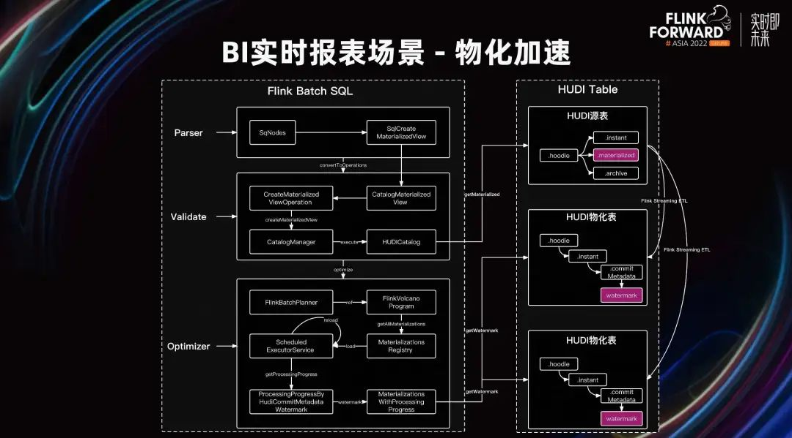

在大数据场景应用中，业务不仅要计算数据结果，而且要保障时效性。目前，我司演化出两条链路。时效性高的数据走 Kafka、Flink 实时链路；时效性要求低的数据走 Spark 离线链路。上图简单描述了 B 站数据上报、处理和使用的链路。数据采集主要通过 APP 端上报的行为事件数据。服务端上报的日志数据会通过网关以及分发层，流式分发到大数据数仓体系内。MySQL 中存储的业务数据，通过 Datax 周期性的批式同步到数仓内。时效性高的数据会通过 Flink+Kafka 进行流式计算。时效性低的数据通过 Spark+HDFS 进行批计算最后出仓到 MySQL Redis Kafka 的介质中，为 AI、BI 的模型训练、报表分析场景使用。1. 离线数据的时效性不足，离线批计算以小时/天为单位。越来越多的业务方希望时效性达到分钟级，离线的小时计算或天计算不能满足业务方的需求。为了达到更高的时效性，业务会再开发一条实时链路。
2. 但实时链路的可观测性较弱。因为在 Kafka 里查看数据并不方便，所以需要将 Kafka 里的数据移动到其他存储中，才能进行查看。实时数据链路普遍不容易和业务时间对齐，难以准确定位到需要重跑的起点。如果数据出现异常，业务一般不会选择在实时流上进行重跑，而是进行离线链路的 T-1 修复。
3. 实时离线双链路会有双份的资源开销，开发以及运维成本。除此之外，口径不一致还会带来额外的解释成本。
4. 全天计算资源高峰集中在凌晨，整个大数据集群的使用峰值在凌晨 2 点~8 点。主要在跑天级任务，也存在任务排队的现象。其他时段的资源比较空闲，使用时有明显的峰谷现象。整体资源使用率有一定的优化空间。
5. 在数据出仓孤岛方面，对于用户来说还需要克隆一份数据到 HDFS 上，因此会存在数据一致性的问题。当数据出仓后，权限以及数据联邦查询都会存在不足。1. 我们通过 Flink+Hudi 将数据增量，以及增量计算产出的结果存储在 Hudi 中，支持分钟级的数据计算，进一步增强了数据的时效性。
2. 除此之外，Hudi 具备流表二象性，不但可以进行实时的流式增量消费，而且可以作为表，直接进行查询。相比 Kafka 链路，进一步增强了可观测性。
3. 实时数据湖同时满足实时和离线的需求，达到降本增效的效果。除此之外，它还支持离线数仓数据重跑的诉求。
4. 通过增量计算，将原本在 0 点以后分配的数据资源进行细分，分摊到全天的每分钟，错峰的使用资源。
5. 通过排序、索引、物化等方式，我们可以直接查询 Hudi 表中的数据，从而达到数据不出仓的效果。
当业务系统数据存储在 MySQL 中，需要将这些数据导入到大数据的数仓中，进行报表、分析、计算等场景。目前，业务数据入仓不仅用于离线 ETL，还期望具备时效性。比如在稿件内容审核场景中，工作人员希望知道近十分钟的稿件增长量是否匹配稿件审核人力，存在实时监控诉求，以及告警诉求。稿件的数据来源于业务数据库，它并不满足于当前天级、小时级数据同步的时效性，希望能达到分钟级的时效性。在降本增效的大背景下，我们不仅要满足业务诉求，还要考虑效能。实时链路用于实时场景，离线链路用于批量的 ETL 场景比较浪费。所以我们希望通过实时数据湖，构建一套流批统一的方案，同时满足实时和离线场景的诉求。通过调研发现，现有的方案中有以下几类：Hive 本身并不具备更新能力，一般按天来导出全量，并不满足时效性诉求。除此之外，该方案还存在数据冗余的问题。Hive 表每天的分区，都是 MySQL 表当天的快照。比如一张用户信息表的信息变化很少，每天都需要存储一遍全量快照。即每条用户信息，每天都会被存储一次。如果 Hive 表的生命周期是 365 天，那这条数据会被重复存储 365 次。DB 的数据通过 Canal 或 Flink CDC 写入 Hudi 中，从而满足时效性的诉求。由于 Hudi 的数据实时更新，不具备可重复读的能力。因此该方案并不满足 ETL 场景。即使使用 Hudi"快照读"的能力。虽然可以读取 Hudi 的历史的 Commit，获取一份某一时刻的快照数据。但如果长时间的保留 Commit 数据，会导致文件过多，会影响访问 timeline 的性能，进而影响到 Hudi 的读写性能。该方案是前两个方案的结合，将 DB 的数据通过 Canal/CDC，写入 Hudi 之后，进行周期性的导出到 Hive 表。Hudi 表用于实时场景，Hive 表用于离线的 ETL 场景。从而同时满足两方面的场景诉求。其缺点在于，用户在使用过程中用到了两张表，存在一定的理解成本，以及数据冗余问题。主要解决数据冗余的问题。通过周期性的 Savepoint，可以存储 Hudi 当时的 timeline 元数据。访问 Savepoint 时，会映射地访问到 Hudi 的实际文件，避免冗余的存储数据文件。每天一个 Savepoint，相当于每天存储一份 MySQL 快照，从而满足了 ETL 场景复读的诉求。与此同时，还可以直接访问 Hudi 的最新数据，满足用户的实时诉求。但该方案仍有一些缺陷，它无法精确的切分跨天数据。通过 Flink 增量写 Hudi 时，会周期性的产生 Commit，无法控制业务时间和 Commit 对齐。如果昨天和今天的数据落在同一个 Commit 里，Savepoint 会以 Commit 为最小力度。当访问昨天的 Savepoint 时，它会包含今天的数据，与用户的预期不符。为了解决上述问题，我们提出的解决方案是 Hudi Snapshot View 快照视图。在 Hudi Savepoint 方案上做了改进，简单来说是一个带过滤的 Hudi Savepoint。在导出 Hive 方案中是可以加过滤条件，将第二天的数据过滤出去。我们把过滤逻辑纳入到 Hudi 快照视图中。在快照视图里将过滤逻辑，做在 Hudi 底层，存储在 Hudi Meta 中。在访问快照视图时，我们会吐出过滤后的数据，从而解决快照里存在跨天数据的问题。如上图所示，Delta Commit T3 包含了 11 月 1 号和 11 月 2 号的数据。快照视图的源数据在存储时，将历史的 T1、T2、T3 的源数据全部进行存储。除此之外，还存储了 Delta<=11 月 1 号的过滤条件。在读取时将数据进行过滤，将仅包含 11 月 1 号及以前的数据给查询端，并不包含 11 月 2 号的数据。快照视图同样是存储元数据，通过映射的方式，访问实际的数据文件，不存在数据冗余存储的问题。也同时满足实时和离线场景，实现了流批统一。除此之外，快照视图是独立切出了一个 timeline，支持再做 Compaction、Clustering 等操作来加速查询。接下来，讲一讲 Snapshot View 的生成时机。用户应该在哪次 Commit 后，做下这个快照视图？这里需要理解两个概念，一个是事件时间，一个是处理时间。当数据出现延迟，虽然现实中的时间到达了 0 点，但它可能还在处理 22 点的数据。此时，如果进行快照视图，用户读取的快照视图数据就会偏少。因为 Commit 是处理时间，不是业务的事件时间。这个 Snapshot View 要在事件时间推进到 0 点后进行，才能够保证数据的完整。为此，我们在 Hudi 中增加了处理进度。这个概念类似于 Flink 中使用 Watermark 来标识处理进度。我们扩展了 Hudi Meta 在 Commit 中存储了处理进度。当事件时间推进到 0 点后，开始进行 Snapshot View 操作，通知下游任务可以被调起。在 Meta 中有了事件的处理进度，在查询 Hudi 时也能获取处理进度，从而进行一些判断。除此之外，我们还做了引擎层的适配。在使用方面，用户写的 SQL 和原来的基本一致，通过 hint 或者 set 参数，指定是查询快照分区或者是查询实时分区。在 DB 入仓的场景上，既满足了实时场景的时效性，又满足了 ETL 的离线诉求，成功实现了实时和离线的统一，达到降本增效的目的。接下来，讲一讲埋点入仓场景。我司作为一家互联网公司，也会进行用户的行为事件定义，收集数据、上报入仓，然后进行分析和使用。用数据驱动指导业务发展。我司的用户⾏为事件上报已经颇具规模，行为事件非常多。现在已经定义了上万个行为事件的 ID，每天日增千亿条数据，流量非常大。埋点入仓是公司级的项目，全站各个业务方都在上报埋点。在使用埋点时，我司存在大量部门业务线的交叉使用。比如广告 AI 需要使用其他业务线上报的数据，进行样本收集和训练。在原有架构上，APP 端上报的数据经过传输和清洗，落入数仓预先划分好的表分区中，供给业务方进行开发使用。这种业务划分是根据 BU、事件类型等业务信息，进行的粗粒度划分。下游的任务可以使用自己部门的表以及其他部门的表，只需要申请权限即可。但该架构也存在一些痛点。一条流数据的隔离性不够，上万个埋点由同一个渠道传输，清洗，隔离性不足。容易出现活动期间某个行为事件猛增，影响整体的任务处理进度。除此之外，业务线使用需要过滤大量无用数据。在下游业务的任务中，可能仅用到自己的一个行为事件进行分析。但此时行为事件与同部门其他的行为事件混在一起。在条件过滤时，引擎层只能做到分区级的过滤。将整个分区的文件加载进来，然后进行过滤，有较大文件读取的 IO 浪费。与此同时，部门在交叉使用数据时，权限管理较难，使用到了其他 BU 的一个行为事件，需要申请整个 BU 表的权限。粒度粗，存在风险。下游有分钟级的诉求。目前，数据进行流式传输是小时级的清洗。下游的时效性是小时级别，不满足用户的时效性的诉求。为了解决上述问题，我们做了一些架构上的优化。如上图所示，数据上报传输后，将数据落到户的 Hudi 表里。用户通过 View 来访问或使用这些数据，可以用于离线 ETL、实时计算、BI 报表分析等场景。对于秒级时效性诉求的数据，会走高优 Kafka 链路，提供给在线服务使用，这种占比就比较小了。北极星事件管理平台和元数据管理，负责管理整个行为事件埋点的生命周期、分发规则等等。平台控制从边缘上报开始，进行规则分流，业务隔离，提升隔离性。当数据落入业务 Hudi 表后，进行 Clustering，对业务数据进行排序和索引。通过引擎层，进行文件级别/数据块级别的 Dataskip，减少实际读取数据量的 IO 开销。用户通过 Hive View 读取数据，平台通过给用户的 View 增加有权限的行为事件，达到行为事件级别权限管理。比如 a 部门的同学，在使用 b 部门的行为事件时，在 a 部门的 View 上增加一个 b 部门行为事件的 ID 即可。在提交 SQL 进行检查时，会进行行为事件级别的权限校验。增量传输清洗 Hudi 表时，Hudi 表支持增量消费，可以达到分钟级的时效性。下游实时任务可以接在这个 View 后面进行使用，从而达到流批统一。在 Hudi 侧的优化方面，因为流量数据入湖不更新，所以我们采用了 no index 模式，去掉 bucket assign 等过程，从而提升写入速度。与此同时，Flink 增量 Clustering 下游的 ETL 延迟，无明显增加。经过 Clustering 之后，数据开始变得有序。索引记录了行为事件的分布情况，可以通过条件查询，进行文件级别和数据块级别的过滤。除此之外，Flink、Spark 等引擎也支持 Hudi 表的谓词下推，进一步提升了效率。在 Flink 对于 View 的支持方面，View 下游可以再去定义 Watermark，也可以在 View 上定义 with 属性等等。通过架构调整和 Hudi 能力的结合，我们增强了埋点管理的隔离性、时效性，也节约了资源。接下来，讲一讲 BI 实时报表场景。在原先架构下，流量数据和 DB 数据导入数仓后，会进行 Join 打宽，聚合后将原来的计算结果输出到 MySQL 之类的存储。BI 报表会直接对接 MySQL，进行数据展示。另外一条离线链路，会进行 T-1 的修数兜底。原先架构的痛点在于，实时和离线两条链路重复建设，计算存储成本高，开发运维成本高，口径解释成本高。Kafka 数据需要复制其他存储，才能进行查询，可观测性比较弱。除此之外，Kafka 链路难做数据修复。Kafka 链路很难确定修复起点，通常使用 T-1 的方式进行修复。存在数据出仓孤岛等问题。BI 实时报表场景一般没有秒级的时效性诉求，分钟级的时效性就可以满足诉求。我们通过 Hudi 替换 Kafka，同时满足了实时和离线的诉求，实现流批统一，达到降本，数据口径得到统一。Hudi 相比 Kafka，可以直接查询 Hudi 中的数据，比 Kafka 更容易、更方便的进行告警。比如在 Kafka 上对比七天前的数据，做一个阈值告警。需要消费七天前的数据以及当前数据，进行计算以后，再进行告警。整个过程比较复杂。Hudi 的查询 SQL 和离线的查询 SQL 是一致的。对于 DQC 系统来说，实时 DQC 和离线 DQC 的方案是统一的，开发成本较低。对于有秒级时效性要求的任务，还需要走 Kafka 链路。除此之外，数据可以做到不出仓。BI 报表可以直接查询，对接查询的 Hudi 表，进行数据展示。在实际使用过程中，也存在一些问题。直接对 Hudi 的明细表进行聚合查询时，查询时间过长，存在读放大的问题。假设实时 DQC 每五分钟统计近一个小时的数据，进行数据条数监控。五分钟会计算近一个小时的数据，下一个五分钟再计算近一个小时的数据。在滑动窗口的过程中，中间的数据会被计算好多次，存在比较严重的 IO 放大。除此之外，以 BI 报表场景为例。假设展示一个 DAU 曲线，每个点都是历史数据的累计值。1 点的数据就是 0 点~1 点数据的累计值。2 点的数据就是 0 点~2 点数据的累计值。在界面展示时，就需要计算 n 个点，每个点都会进行重复的计算，导致查询的时间较长，存在读放大的问题。除此之外，开发运维的成本较高。用户会在一个 BI 面板的界面，展示多个指标。可能是从同一张 Hudi 的明细表里，出的不同维度的数据。如果出十个指标，就需要开发和运维十个实时任务，开发和运维成本较高，可靠性较低。当一个实时任务出现异常，这个面板就会缺失一部分的指标。我们提出的优化方案是，通过 Flink+Hudi 构建 Projection 物化视图。通过 Flink State 状态，仅需摄取增量数据计算即可，避免读放大问题。将查询结果提前计算出来，直接查询结果数据，来达到加速查询的效果。具体的流程是，用户提交一个查询 SQL 给 Excalibur Server，进行 SQL 解析。在解析过程中，会提交 Projection 创建，提交一个 Stream 任务，然后增量读取原始表中的数据，进行物化计算以后，再存储到 Projection 物化表中。当查询 SQL 命中物化规则时，就会改写查询，直接查询结果表，达到加速的效果。
通过扩展 Flink Batch SQL 的解析过程，查询时候会加载物化规则以及 Projection 的元数据。并且判断物化表当前 Watermark 物化进度。如果满足要求，则改写查询 Projection 物化表。我们参考 Calcite 的物化规则，增加了 TVF 的语法⽀持。支持 Projection 的创建，用户提交批查询，可以通过在 select 语句上增加 hint，提示查询引擎，该查询会进行复用。引擎会对该查询创建 Projection。支持 Flink SQL 的 Projection DDL 语法以及 SQL 查询改写的规则。当用户提交批查询时，如果有对应的 Projection，就能进行改写。改写后可以直接使用 Projection 的结果，大大加速查询，能够做到秒级甚至毫秒级的响应。Projection 的改写降级，是根据 Watermark 等指标，屏蔽掉 Projection 实时任务的延迟和失败等问题，保障了查询结果的可靠性。我们在 Hudi Meta 增加了 Watermark 数据处理进度信息。在数据写入的过程中，我们会在 Commit Meta 中记录物化进度。在执行物化规则匹配时，如果落后当前时间太多，就会拒绝当前 Projection 改写，直接降级到原表，进行数据查询。在 select 语句上增加 hint 创建，通过物化的能力达到加速查询的效果。不但解决了读放大的问题，通过自动降级，也减少了用户的开发和运维成本。在未来，我们会围绕 Projection 效率进行优化。回收长期无法命中的 Projection。合并多个维度相同的 Projection，降低 Projection 的计算成本。除此之外，我们会和指标系统对接，通过指标系统缓存加速查询，满足一些高 QPS 场景的流计算。
之前在流式写入时，使用 Flink SQL，批量修数使用 Spark SQL，仍然需要开发和运维两套 SQL。在 Hudi 实时数据库的方案下，我们参考了离线修数方案。历史分区重跑，使用 Flink Batch Overwrite，与离线修数方式是一致的。当前分区重跑，我们使用 Flink Stream Overwrite 的方式。比如需要将当前的分区数据进行清空删除，然后再进行写入。因为它是 no index 的方式去写入，所以它没有没有办法通过 update 的形式覆盖之前写入的数据。我们通过扩展 Hudi Catalog，支持 Flink SQL 的方式，alter table drop partition 操作删除分区及数据。然后通过重新流式写入的方式，实现了 Flink Stream Overwrite。当工具支持级联重跑任务后，我们就可以从最源端的 ODS 层级，修复到最末端，不再需要开发运维 Spark T-1 修复任务。真正达到了流批一体的效果。
在基建优化方面，我们对 Table Service 进行优化。由于 Compaction、Clustering 等任务耗资源较多，和写入任务相互影响，导致写入的性能下降。我们通过拆分 Table Service，通过独立资源运行，来解决这个问题。我们将 Compaction plan、Clustering plan 执行计划的生成过程，放在写入任务中，将真正执行 Compaction、Clustering 的 task 独立进程，进行执行。避免写入和 Table Service 相互影响，提高了写入性能。与此同时，支持了动态调整 Compaction plan 的策略，通过调整频次，减少不必要的 IO。
Hudi Manager 用于规模化的管理托管，包括表服务托管，比如 Compaction、Clustering、Projection 任务托管独立运行，资源隔离，提升写入稳定性。支持自动拉起，可批可流。在表管理方面，是在建表时构建 Hudi 的源数据，取代第一次写入时构建的源数据，避免重要参数遗漏。比如将数据批量导入到 Hudi 时，不关心 preCombine 比较字段，初始化好了表的元数据。流式写入时，不会修改表的元数据。该匹配字段的缺失，会导致无法得到正确的合并结果。在策略配置方面，用户选择 OLAP、ETL 场景时，可以自动配置不同的表服务的执行间隔。比如下游的 ETL 场景是天级别调度。相比 OLAP 场景，我们可以使用更低的 Compaction 频次。如上图所示，我们在实际使用的过程中，发现和解决了不少数据质量、稳定性、性能方面的问题，并做了功能性的增强，贡献给社区。涵盖了 Sink、Compaction、Clustering、Common 包、Source、Catalog 等若干方面。前面场景中提到的一些能力，我们陆续也会以 PR 或者 RFC 的形式推给社区。
我们在流量数据入湖、DB 数据入湖场景、报表场景以及流批一体，都做了一系列的实践。接下来，我们还会深入数仓领域，探索通过物化任务减少数仓分层，通过分层任务的分析、诊断、优化，进行智能分层。使业务同学更加专注于数据的使用，减轻数仓分层的工作量，向湖仓一体的方向演进。增强增量化计算，支持围绕 Hudi 的 Join ETL，在存储层优化 Join 的逻辑。探索 Hudi 在 AI 领域的运用。在内核方面，我们后续会增强 Hudi Meta Store，统一元数据管理；增强 Table Service；增强 Hudi Join 的列拼接能力。如果这个文章对你有帮助，不要忘记 「在看」 「点赞」 「收藏」 三连啊喂！